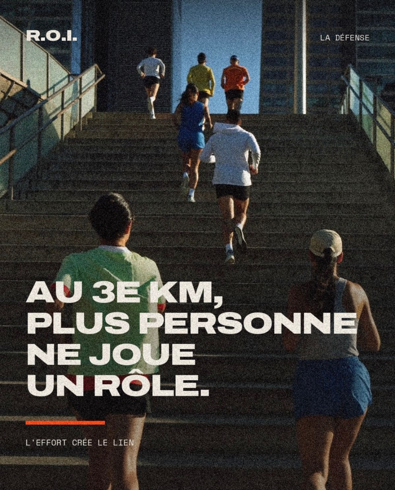

R.O.I — Run On Invest — L'impact après la ligne d'arrivée
L'impact après la ligne d'arrivée.
Une course de 5, 10 ou 21,1 km entre les tours de Paris La Défense, une arrivée dans l'Arena, puis une après-midi de rencontres entre entrepreneurs, dirigeants et investisseurs.
Un même dossard donne accès à la course et à l'après-midi.
Tous les retours ne se mesurent pas en euros.

Les qualités qui font progresser en course à pied sont celles qui font avancer une entreprise : l'effort, la discipline, la constance, la prise de risque.
R.O.I associe deux temps : l'investissement personnel que demande la course, puis les échanges professionnels qu'elle rend possibles une fois la ligne franchie.
La ligne d'arrivée ne clôt pas la journée. Elle en ouvre la seconde partie.
La course le matin,
le réseau l'après-midi.
Tout se déroule le même jour, sur le même site. Le dossard qui sert à courir donne aussi accès à l'après-midi.
La course
Village au pied de la Grande Arche, départs par vagues, parcours fermé entre les tours.
- 01 5, 10 ou 21,1 km, départs par vagues
- 02 Dossard à puce, chronométrage et classements officiels
- 03 Ravitaillements, signaleurs et secours sur tout le tracé
- 04 Village : retrait des dossards, consignes, échauffement
Le réseau
L'arrivée se fait à l'intérieur, dans Paris La Défense Arena. Les rencontres professionnelles se poursuivent jusqu'au soir.
- 01 Derniers hectomètres et ligne d'arrivée dans l'Arena
- 02 Le dossard indique vos nom, fonction et entreprise
- 03 Une après-midi d'échanges entre entrepreneurs, dirigeants et investisseurs
- 04 Restauration sur place et rencontres jusqu'en fin de journée
Un dossard,
deux faces.
Avant la ligne, le dossard sert à la course : un numéro, une puce, un temps. Sur le parcours, la fonction de chacun n'a pas d'importance.
Après la ligne, le même support fait office de badge : nom, fonction, entreprise. Il n'y a rien d'autre à retirer ni à porter.
Le déroulé, heure par heure.
Programme indicatif. Les horaires définitifs seront communiqués à l'ouverture des inscriptions.
-
T–02:00
Village ouvert
Retrait des dossards au pied de la Grande Arche, consignes, échauffement.
-
T–00:15
Sas de départ
Briefing et mise en place des vagues. Une seule ligne de départ pour les trois distances.
-
T+00:00
Départ
Départ des vagues entre les tours. Le chronométrage commence.
-
T+00:15 → T+02:30
Arrivées dans l'Arena
La ligne d'arrivée est à l'intérieur : médaille, ravitaillement, récupération.
-
T+03:00
Ouverture de l'après-midi
Le dossard devient badge : nom, fonction, entreprise. Les échanges commencent.
-
T+08:00
Clôture
Fermeture de l'Arena. Les échanges engagés se poursuivent en dehors de l'événement.
Ce qu'il y a
derrière la course.
R.O.I n'est pas une course grand public suivie d'un cocktail. C'est un réseau professionnel dont la course est la porte d'entrée.
La course sert de point de rencontre et l'effort de terrain commun. L'après-midi prolonge la matinée sur le terrain professionnel : échanges, projets, opportunités d'affaires.
Quelques kilomètres courus ensemble mettent les participants sur un pied d'égalité, quel que soit leur titre. Les conversations de l'après-midi démarrent donc plus directement.
Chaque dossard est vérifié avant d'être attribué : tous les participants présents dans la salle exercent une activité professionnelle.
L'accès est vérifié.
Nous vérifions un seul point : l'exercice d'une activité professionnelle. Trois justificatifs sont acceptés, un seul suffit. Le paiement intervient après la validation du dossier.
- Extrait Kbis
- Vous dirigez ou détenez une société. Un extrait de moins de trois mois.
- Avis SIRENE
- Vous exercez en indépendant. L'avis de situation s'obtient en ligne, gratuitement.
- Cooptation
- Vous êtes salarié. Une attestation de votre employeur, ou la cooptation d'un participant déjà inscrit.
Voir en détail les profils concernés, les justificatifs et les cas particuliers →
Trois distances,
un seul dossard.
Le tarif ne dépend pas de la distance choisie, et l'accès à l'après-midi est identique pour tous. Il augmente à chaque nouvelle vague d'inscriptions.
Pour une première participation, une course accompagnée, ou pour garder de l'énergie pour l'après-midi.
ACCÈS APRÈS-MIDI ■ INCLUS
Le format principal : un effort réel, sur un parcours rapide entre les tours.
ACCÈS APRÈS-MIDI ■ INCLUS
Le semi-marathon de La Défense : 21,0975 km mesurés, sur un parcours entièrement fermé à la circulation.
ACCÈS APRÈS-MIDI ■ INCLUS
Trois vagues, un tarif qui monte.
Chaque vague est limitée en nombre de dossards. Le tarif de la vague en cours reste acquis pendant l'instruction du dossier.
Le dossard couvre la journée entière : course chronométrée, t-shirt R.O.I, médaille, arrivée dans l'Arena et après-midi de rencontres. Il est transférable jusqu'au jour de l'événement, sous réserve que son nouveau titulaire passe la même vérification d'accès.
ParisLa Défense
Le premier quartier d'affaires d'Europe. Une course entre les tours, une arrivée à l'intérieur.
- Départ
- Village et sas de départ au pied de la Grande Arche.
- Parcours
- Un tracé fermé entre les tours : esplanade, parvis et dalles. Une ou plusieurs boucles selon la distance.
- Arrivée
- À l'intérieur de Paris La Défense Arena.
- Après la ligne
- L'après-midi de rencontres se tient dans l'Arena, jusqu'au soir.
- Venir
- Métro ligne 1, RER A, Transilien L, station La Défense Grande Arche.
- Le quartier
- 180 000 salariés, 500 entreprises, 3,5 millions de m² de bureaux. Source — Paris La Défense
Prenez votre place
sur la ligne.
Édition 01, Paris La Défense, septembre 2027. La vague Early Bird est ouverte jusqu'au 30 novembre 2026, dans la limite des dossards disponibles.
Prendre un dossard→